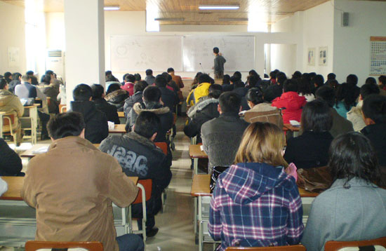
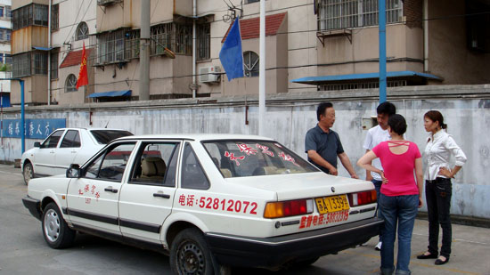
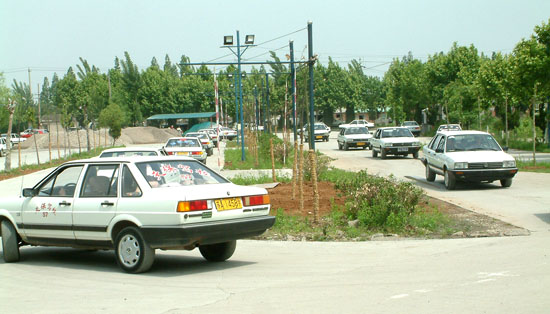

一、报名：
本地户口请携带身份证复印件二张（正反面复印同一张A4纸上），增驾需驾照正、副本复印件一张；外地户口同时携带身份证复印件和居住证复印件二张到就近报名点登记报名。
二、法制课
地点：中华路501号
您是我校第 期汽车学员，请您于 年 月 日上午(8:00)前往指定教室参加法制培训共计三天。(中华路501号可乘2、16、26、33、44、49、88、101、102、105、106、305、游2、游4到中华门内站下)
法制课培训结束后前往所在报名点领取考试凭证，并预约理论考试时间，按预约时间前往天保驾校练考场参加考试(如弃考将按零分计算，并须重新预约)。考试题库随机抽取100题90分及格，考试内容：道路交通安全法、安全文明驾驶、救护知识。
注：报名后不考交规长期有效，理论考试合格之日起有效期3年，须在此期间内学完并领取驾照。

地点：大明路（小行分校）、大桥、河西、白马公园、钟阜路、金港晓庄、草场门、天保桥练考场；可进行自动挡训练的分校（大明路（小行分校）、大桥、中央北路、河西、白马公园、天保桥练考场）
电脑考试及格后方可进行空驾训练，学员持学员证到就近空驾地点登记（注：学校不再另行通知），时间：每天8:00-20:00时，并根据自身时间安排，选择道路训练的分校和班次(正常班、双休班、晚班)。
正常班：周一至周四上午或下午（上午8：00-11：00、下午1：00-4：00）
双休班：周六、周日上午或下午（上午8：00-11：00、下午1：00-4：00）
晚一班：周六、周日、周一晚（晚5：00-8：00）
晚二班：周二、周三、周四晚（晚5：00-8：00）
注：周五下午不训练
要求：掌握驾驶基本操作程序，对油门、离合器、排挡、刹车的配合使用及方向运用。
四、初级道路训练(两周)
地点：大明路（小行分校）、大桥、河西、白马公园、金港晓庄、草场门、天保桥练考场
学员空驾合格后，持空驾合格证按规定的时间接受两周时间的初级道路训练。
内容：起步、停车、变速驾驶、方向运用、定点停车、直角路等练习及仪表的识别。
要求：起步平稳不熄火，正确使用排挡及方向使用，自如得当。
五、桩、路结合训练(两周)
地点：大明路（小行分校）、大桥、河西、白马公园、金港晓庄、草场门、天保桥练考场
初级道路训练结束后，学员按照自己选择的路训分校和班次，自行前往选择的分校进行桩、路结合训练(一边桩训、一边路训，合理利用在校时间)
内容：反复练习起步(迅速)停车(平稳)、变速驾驶的动作要领，并增加坡道起步、定点停车、百米增减挡、公路调头及灯光使用等。
要求：各项训练科目动作规范、操作熟练、遵守道路交通安全法、正确处理道路上出现的一切复杂情况。

六、倒桩训练(二周)
地点：大明路（小行分校）、大桥、河西、金港晓庄、草场门、天保桥练考场
内容：按照桩考要求，反复练习桩考全套动作(正、反手进库)。
七、电子桩练习—电子桩考
地点：天保桥练考场
内容：倒桩训练结束后，根据教练通知的时间，到天保桥练考场按电子桩考试要求，进行电子桩练习及桩考(同时进行道路综合测试)。

地点：天保驾校电子路考场
内容：电子桩考试结束后，根据学校安排按照电子路考要求进行电子路考科目训练，直到路考及格
电子路训练流程 :
九、道路综合练习—人工路考
地点：天保驾校考试的路线
内容：电子桩考结束后，学校根据车管所路考计划，提前一定时间通知学员，按路考要求安排考前道路综合训练，迎接路考，直到路考及格。
1、学习摩托车的朋友，理论考试合格15天后，请您联系18913835712 袁教练 安排训练、考试。
注：周五下午不训练，训练时请出示报名的缴费单据。
2、学习大货的朋友，电脑考试及格后，即可到天保驾校练考场登记训练。
3、增驾大客的朋友，电脑考试及格四十五天后前往天保桥练考场登记训练。联系电话：52814155